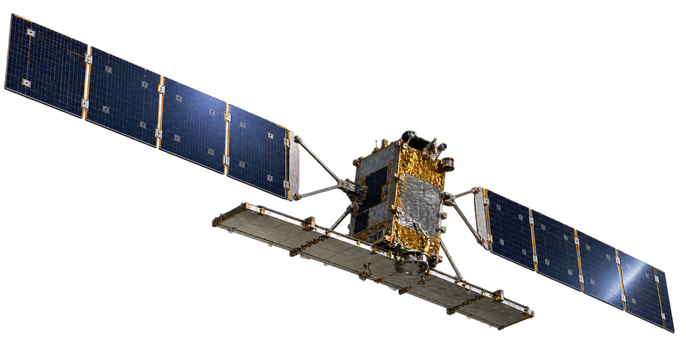

01 · Explore
Snow & Climate Dashboard
An interactive interface for exploring the snow-cover and climate results of the Hohe Tauern study.
Integration of SAR and Optical Satellite Data for Delineation of Dry and Wet Snow Cover in Hohe Tauern National Park, Austria.

The study combines Sentinel-1 SAR, Sentinel-2 optical imagery, terrain, temperature and precipitation to investigate snow-cover dynamics. The workflow includes reproducible Python and GIS processing, classification, spatial analysis and visualization, with approximately 89% final accuracy.

An interactive interface for exploring the snow-cover and climate results of the Hohe Tauern study.
The full web narrative for the thesis: research questions, methodology, results, discussion and interpretation.